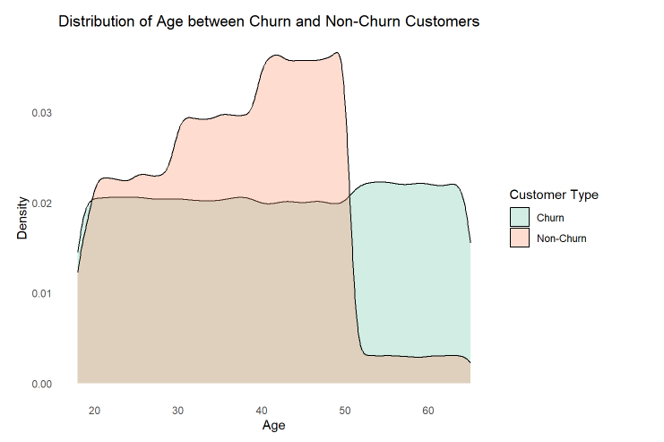
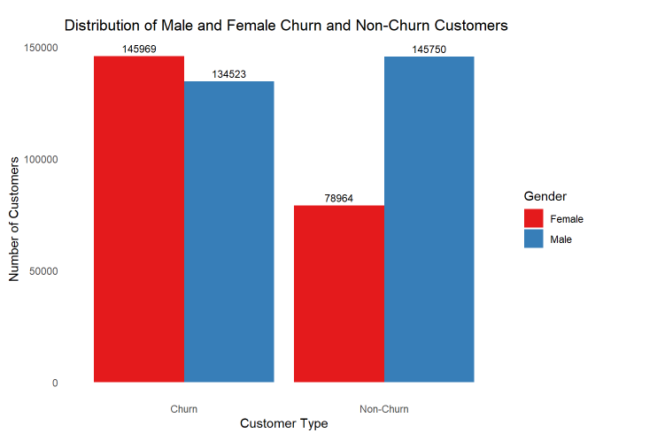
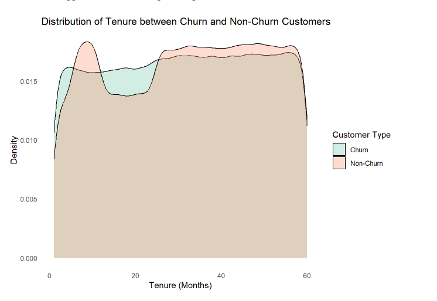
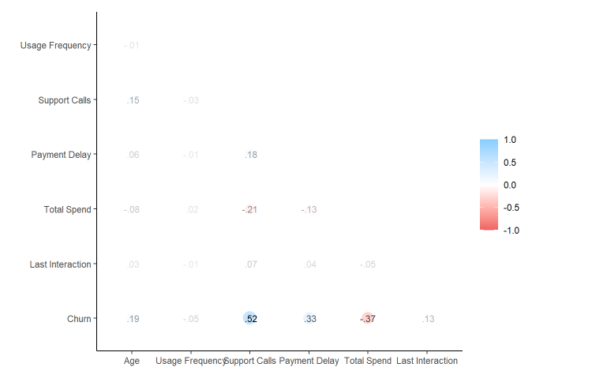

Customer Churn Project
Customer Churn Logistic Modelling
For this project, our group worked on a customer churn dataset. This dataset is centred around a telecommunications company, where it provides information on how customers are utilising the services and also indicates whether a customer has churned.
This project aims to propose a model to predict potential customer churners. To do so, spark will be leveraged to push computations and techniques such as exploratory data analysis and modelling will be employed.
Exploratory Data Analysis (EDA)
To better understand our data set, we conducted EDA to examine the distribution of independent variables and their relationships with the dependent variable. To enhance the clarity in our visualizations, we labelled Churn (1 and 0) as “Churn” and “Non-Churn” respectively. The figures accompanying our analysis can be found in the Appendix.
EDA Visualisations
Distribution of Churn customers

We observe a relatively equal distribution of churn and non-churn customers, with 280,492 and 224,714 instances, respectively. This balanced class distribution ensures that the dataset will not introduce bias in model prediction and prevent the model from favouring the majority class.
Distribution of Age between Churn customers

We can observe that among churn customers, age is uniformly distributed across the 20 to 60 years old range. In contrast, non-churn customers tend to be concentrated between 30 and 50 years old, with a notable decrease in the proportion of aged 50 to 60 years old. Since there is a notable difference in the distribution, Age is possibly a significant variable.
Distribution of Gender between Churn customers

We notice that among churn customers, the number of males and females is quite similar. In contrast, among non-churn customers, there is a considerably higher count of males compared to females. Disparity in distribution suggests that Gender might be significant.
Distribution of Tenure between Churn customers

The distribution of tenure does not show a notable disparity between churn and non-churn customers. There are minor variations, with non-churn customers showing slightly higher and lower proportions in the 10 and 20 months range respectively. This suggests that Tenure might be insignificant.
Distribution of Usage Frequency between Churn customers

There is a small difference in the distribution of usage frequency within the 0-10 days range, with a slightly higher proportion of churn customers compared to non-churn customers. As such, Usage Frequency might be insignificant.
Distribution of Support Calls between Churn customers

The majority of non-churn customers make fewer than 4 support calls. As a result, for support call counts less than 4, there are more non-churn customers than churn customers, while the opposite is observed for support call counts between 4 and 10. Notable difference in distribution suggests that Support Calls are significant.
Distribution of Payment Delay between Churn customers

We observe that non-churn customers are concentrated in less than 20 days. However, among churn customers, the distribution is more even, with a slightly higher proportion having payment delays exceeding 20 days. Disparity in distribution seems to suggest that Payment Delay is significant.
Distribution of Subscription Type between Churn customers

We do not observe any distinction in the subscription preferences among churn and non-churn customers respectively. Therefore, Subscription Type might be insignificant.
Distribution of Contract Length between Churn customers

We noticed that non-churn customers tend to avoid signing up for monthly contracts. Whereas, for churn customers, there is a relatively even distribution. Huge difference in distribution suggests that Contact Length might be significant.
Distribution of Spending Amount between Churn customers

We can observe that churn customers exhibit a relatively even distribution in terms of total amount spent, whereas non-churn customers tend to concentrate on total amount spent exceeding $500 range. Disparity in distribution seems to suggest that Total Spend might be significant.
Distribution of Last Interaction between Churn customers

We observe that churn customers show a relatively even distribution in terms of the number of days since their last interaction with the company. In contrast, a significant proportion of non-churn customers are concentrated around less than 15 days since their last interaction. Notable difference in distribution suggests that Last Interaction is significant.
Correlation Matrix

EDA Code
# Churn vs Non-Churn
sql <- "SELECT IF(Churn = 1.0, 'Churn', 'Non-Churn') AS `Customer Type`,
COUNT(Churn) AS `Number of Customers`,
COUNT(Churn) / SUM(COUNT(Churn)) OVER () AS Proportion
FROM Customer
GROUP BY Churn"
churn <- DBI::dbGetQuery(sc, sql)
churn <- customer |>
mutate(`Customer Type` = ifelse(Churn == 1.0, 'Churn', 'Non-Churn')) |>
group_by(`Customer Type`) |>
summarize(`Number of Customers` = n()) |>
mutate(Proportion = `Number of Customers` / sum(`Number of Customers`)) |>
collect()
churn |>
ggplot(aes(x= `Customer Type`, y = `Number of Customers`, fill = `Customer Type`)) +
geom_col() +
geom_text(aes(label = paste0(round(Proportion*100,2),"%")), vjust = -.5, size = 3.5) +
scale_fill_brewer(palette = "Set2") +
ggtitle("Number of Churn and Non-Churn Customers") +
ylab("Number of Customers") + xlab("Customer Type") +
theme_minimal() +
theme(panel.grid = element_blank())
# Age
customer <- customer |>
mutate(`Customer Type` = ifelse(Churn == 1, "Churn", "Non-Churn"))
customer |>
ggplot(aes(x=Age, fill= `Customer Type`)) +
geom_density(alpha=.3) +
scale_fill_brewer(palette = "Set2") +
ggtitle("Distribution of Age between Churn and Non-Churn Customers") +
ylab("Density") + xlab("Age") +
theme_minimal() +
theme(panel.grid = element_blank())
# Gender
customer |>
group_by(Gender, `Customer Type`) |>
count() |>
ggplot(aes(fill = Gender, y = n, x = `Customer Type`)) +
geom_bar(position = "dodge", stat = "identity") +
geom_text(aes(label = n), vjust = -.5, size = 3,
position = position_dodge(width = 0.9)) +
scale_fill_brewer(palette = "Set1") +
ggtitle("Distribution of Male and Female Churn and Non-Churn Customers") +
ylab("Number of Customers") + xlab("Customer Type") +
theme_minimal() +
theme(panel.grid = element_blank())
#Tenure
customer |>
ggplot(aes(x= Tenure, fill= `Customer Type`)) +
geom_density(alpha=.3) +
scale_fill_brewer(palette = "Set2") +
ggtitle("Distribution of Tenure between Churn and Non-Churn Customers") +
ylab("Density") + xlab("Tenure (Months)") +
theme_minimal() +
theme(panel.grid = element_blank())
# Usage
customer |>
ggplot(aes(x= `Usage Frequency`, fill= `Customer Type`)) +
geom_density(alpha=.3) +
scale_fill_brewer(palette = "Set2") +
ggtitle("Distribution of Usage Frequency between Churn and Non-Churn Customers") +
ylab("Density") + xlab("Usage Frequency (Days)") +
theme_minimal() +
theme(panel.grid = element_blank())
# Suport Calls
customer |>
group_by(`Support Calls`, `Customer Type`) |>
count() |>
ggplot(aes(x = `Support Calls`, y = n, fill = `Customer Type`)) +
geom_bar(position = "dodge", stat = "identity") +
scale_fill_brewer(palette = "Set2") +
ggtitle("Distribution of Number of Support Calls Made between Churn and Non-Churn Customers") +
ylab("Number of Customers") + xlab("Number of Support Calls Made") +
theme_minimal() +
theme(panel.grid = element_blank())
# Payment Delay
customer |>
ggplot(aes(x= `Payment Delay`, fill= `Customer Type`)) +
geom_density(alpha=.3) +
scale_fill_brewer(palette = "Set2") +
ggtitle("Distribution of Payment Delay between Churn and Non-Churn Customers") +
ylab("Density") + xlab("Payment Delay (Days)") +
theme_minimal() +
theme(panel.grid = element_blank())
# Subscription Type
customer |>
group_by(`Subscription Type`, `Customer Type`) |>
count() |>
ggplot(aes(fill = `Subscription Type`, y = n, x = `Customer Type`)) +
geom_bar(position = "dodge", stat = "identity") +
geom_text(aes(label = n), vjust = -.5, size = 3,
position = position_dodge(width = 0.9)) +
scale_fill_brewer(palette = "Pastel2") +
ggtitle("Distribution of Subscription Type among Churn and Non-Churn Customers") +
ylab("Number of Customers") + xlab("Subscription Type") +
theme_minimal() +
theme(panel.grid = element_blank())
# Contract Length
customer |>
group_by(`Contract Length`, `Customer Type`) |>
count() |>
ggplot(aes(fill = `Contract Length`, y = n, x = `Customer Type`)) +
geom_bar(position = "dodge", stat = "identity") +
geom_text(aes(label = n), vjust = -.5, size = 3,
position = position_dodge(width = 0.9)) +
scale_fill_brewer(palette = "Paired") +
ggtitle("Distribution of Contract Length among Churn and Non-Churn Customers") +
ylab("Number of Customers") + xlab("Contract Length") +
theme_minimal() +
theme(panel.grid = element_blank())
# Total Spend
customer |>
ggplot(aes(x= `Total Spend`, fill= `Customer Type`)) +
geom_density(alpha=.3) +
scale_fill_brewer(palette = "Set2") +
ggtitle("Distribution of Total Amount Spend between Churn and Non-Churn Customers") +
ylab("Density") + xlab("Total Amount Spend ($)") +
theme_minimal() +
theme(panel.grid = element_blank())
# Last Interaction
customer |>
ggplot(aes(x= `Last Interaction`, fill= `Customer Type`)) +
geom_density(alpha=.3) +
scale_fill_brewer(palette = "Set2") +
ggtitle("Distribution of Last Interaction between Churn and Non-Churn Customers") +
ylab("Density") + xlab("Number of Day since their Last Interaction with the Company") +
theme_minimal() +
theme(panel.grid = element_blank())
# Matrix
columns = c("Age", "Usage Frequency", "Support Calls", "Payment Delay",
"Total Spend", "Last Interaction", "Churn")
customer |>
select(columns) |>
correlate(use = "pairwise.complete.obs", method = "pearson") |>
shave(upper = T) |>
rplot(print_cor = TRUE)
# Raster Plot
customer |>
dbplot_raster(x = `Support Calls`, y = `Churn`, fill = n(), resolution = 10) +
ggtitle("Relationship between Number of Support Calls and Churn") +
ylab("Churn") + xlab("Number of Support Calls Made") +
scale_fill_continuous(name = "Number of Customers", trans = "reverse") +
theme_minimal() +
theme(panel.grid = element_blank())Logistic Regression
Feature Engineering
We have applied various feature engineering techniques to pre-process our features and enhance their quality, before training our models to improve the overall performance.
We performed data binning on selected numeric variables, transforming them into categorical variables (Figure 14). Based on our EDA findings, we identify three variables - “Age”, “Total Spend” and “Payment Delay” - that display a non-monotonic relationship (step function) with the target variable. These variables exhibit a uniform distribution within specific intervals, leading us to bin them accordingly based on those intervals.
We built a Spark ML pipeline to integrate a series of transformation steps and algorithms on our train dataset into a single workflow. In the initial stage, we utilize the ft_standard_scaler function to standardise our numeric variables on a constant scale. This ensures that our numeric variables maintain a uniform scale and thus, prevents the model from being biassed towards variables with larger scales. Subsequently, we utilise ft_one_hot_encoder functions to encode categorical variables into numerical representations, generating binary columns for each distinct category (except for the base). This allows us to include those variables into our models since most algorithms require numeric inputs. In the final step of our process, following the transformation of our variables, we apply the ml_logistic_regression function on our dataset, given its suitability in binary classification and its ease in interpreting results.
customer <- customer |>
mutate(`Age Group` = case_when(Age >= 50 ~ "Senior",
Age >= 40 ~ "Middle",
Age >= 30 ~ "Mid-Middle",
TRUE ~ "Young"),
`Payment Group` = ifelse(`Payment Delay` <= 20, "Short", "Long"),
`Spend Group` = ifelse(`Total Spend` <= 500, "Short", "Long"))Data Binning and Data set splitting
customer <- customer |>
mutate(`Age Group` = case_when(Age >= 50 ~ "Senior",
Age >= 40 ~ "Middle",
Age >= 30 ~ "Mid-Middle",
TRUE ~ "Young"),
`Payment Group` = ifelse(`Payment Delay` <= 20, "Short", "Long"),
`Spend Group` = ifelse(`Total Spend` <= 500, "Short", "Long"))
# Separation of Dataset into Training and Testing sets
customer_split <- customer |>
sdf_random_split(training = 0.7, testing = 0.3, seed = 1234)
customer_train <- customer_split$training
customer_test <- customer_split$testing
customers_train <- customer_train |>
select(-CustomerID)
customers_test <- customer_test |>
select(-CustomerID)Model 1 (Base Model with all variables and Cross-Validation)
We utilise the sdf_random_split function to partition our dataset into training and test subsets, with a 70-30 ratio, and set the seed to 1234 to ensure reproducibility. After constructing our ML pipeline, we employ the ml_fit function to fit the training dataset into the pipeline, generating a pipeline model. We then utilize the ml_transform function to execute the pipeline model on the test dataset which allows us to assess the performance of our model and evaluate its effectiveness in handling unseen data.
We decided to utilise three metrics - AreaUnderROC, Precision and Recall - to evaluate the performance of our model using the test dataset. They range from 0 to 1, with a higher value indicating better performance. The AreaUnderROC is useful in evaluating the model’s ability to classify between churn and non-churn customers at various thresholds.
A confusion matrix was created to calculate the Precision and Recall of our model performance. Precision evaluates the accuracy of positive predictions made by our model, providing us with the proportion of actually churned customers among those predicted as churned. Recall measures our model’s ability to capture all actual churned customers, providing the proportion of correctly predicted churn customers among those who actually churned.
Having obtained our models, we can then look to employ regularisation techniques. Regularisation will help prevent overfitting of our model by imposing penalties on our coefficients. There are 3 regularisation techniques considered - LASSO Regularisation, Ridge Regularisation and Elastic Net Regularisation. In order to employ these 3 techniques, we have utilised the ml_cross_validator function to specify our alpha and lambda values. Whereby, elastic_net_param (alpha) has been set from 0 to 1 in increments of 0.2 and reg_param (lambda) has taken the values of 0.001, 0.005 and 0.01. Performance Metric ROC is then used to identify the best set of hyperparameters to be reimplemented into the initial pipeline.
Model 1
# Logistic Modelling - Model 1
pipeline_1 <- ml_pipeline(sc) |>
ft_vector_assembler(
input_cols = c("Tenure", "Usage Frequency", "Support Calls",
"Last Interaction"),
output_col = "features") |>
ft_standard_scaler(
input_col = "features",
output_col = "stdz_features",
with_mean = TRUE) |>
ft_string_indexer(
input_col = "Gender",
output_col = "Gender_indexed") |>
ft_string_indexer(
input_col = "Subscription Type",
output_col = "Subscription_Type_indexed") |>
ft_string_indexer(
input_col = "Contract Length",
output_col = "Contract_Length_indexed") |>
ft_string_indexer(
input_col = "Age Group",
output_col = "Age_Group_indexed") |>
ft_string_indexer(
input_col = "Payment Group",
output_col = "Payment_Group_indexed") |>
ft_string_indexer(
input_col = "Spend Group",
output_col = "Spend_Group_indexed") |>
ft_one_hot_encoder(
input_cols = c("Gender_indexed", "Subscription_Type_indexed",
"Contract_Length_indexed","Age_Group_indexed",
"Payment_Group_indexed", "Spend_Group_indexed"),
output_cols = c("Gender_encoded", "Subscription_Type_encoded",
"Contract_Length_encoded", "Age_Group_encoded",
"Payment_Group_encoded", "Spend_Group_encoded")) |>
ft_vector_assembler(
input_cols = c("stdz_features", "Gender_encoded", "Age_Group_encoded",
"Subscription_Type_encoded", "Contract_Length_encoded",
"Payment_Group_encoded", "Spend_Group_encoded"),
output_col = "final_features") |>
ml_logistic_regression(
features_col = "final_features",
label_col = "Churn")
pipeline_model_1 <- ml_fit(pipeline_1, customer_train)
pred.test_1 <- ml_transform(pipeline_model_1, dataset = customer_test)
auc.test_1 <- pred.test_1 |>
ml_binary_classification_evaluator(
label_col = "Churn",
prediction_col = "prediction",
metric_name = "areaUnderROC"
)
print(paste0("AUC for model 1: ", auc.test_1))
### Performance Metrics
TP_1 <- pred.test_1 |>
filter(Churn == 1 & prediction == 1) |>
summarise(count = n()) |>
collect()
FP_1 <- pred.test_1 |>
filter(Churn == 0 & prediction == 1) |>
summarise(count = n()) |>
collect()
TN_1 <- pred.test_1 |>
filter(Churn == 0 & prediction == 0) |>
summarise(count = n()) |>
collect()
FN_1 <- pred.test_1 |>
filter(Churn == 1 & prediction == 0) |>
summarise(count = n()) |>
collect()
Confusion_Matrix_1 <- matrix(data = c(TP_1,FP_1,FN_1,TN_1),nrow = 2)
Accuracy_1 <- (TP_1 + TN_1) / (TP_1 + FP_1 + TN_1 + FN_1)
Precision_1 <- TP_1 / (TP_1 + FP_1)
Type1_error_1 <- FP_1 / (FP_1 + TN_1)
Type2_error_1 <- FN_1 / (FN_1 + TP_1)
Recall_1 <- TP_1/(TP_1 + FN_1)
CM_stats_1 <- data.frame(Accuracy_1,Precision_1,Type1_error_1,Type2_error_1, Recall_1) |>
rename(accuracy = count, precision = count.1, "Type 1 error" = count.2,
"Type 2 error" = count.3, Recall_1 = count.4)
print("Confusion matrix for model 1:")
Confusion_Matrix_1
CM_stats_1[1] "AUC for model 1: 0.935469957012298"[1] "Confusion matrix for model 1:" [,1] [,2]
[1,] 73745 10198
[2,] 8608 58403 accuracy precision Type 1 error Type 2 error Recall_1
1 0.875419 0.8954744 0.1284565 0.1214872 0.8785128Model 1 with Cross Validation
Applying regularisation, it was determined that the best set of values were 0 and 0.001 for alpha and lambda values respectively. This indicates that a LASSO regularisation was favoured over the other 2 regularisation techniques. Model 1 (CV)’s performance metrics can be viewed in the table below.
# Logistic Modelling - Model 1 (CV)
cv <- ml_cross_validator(
sc,
estimator = pipeline_1,
estimator_param_maps = list(
logistic_regression = list(
elastic_net_param = c(0, 0.20, 0.40, 0.60, 0.80, 1),
reg_param = c(0.001,0.005,0.01)
)
),
evaluator = ml_binary_classification_evaluator(
sc,
label_col = "Churn"
),
num_folds = 10,
parallelism = 6,
seed = 1234
)
cv_model <- ml_fit(cv, customer_train)
ml_validation_metrics(cv_model) |>
arrange(desc(areaUnderROC))
pipeline_2 <- ml_pipeline(sc) |>
ft_vector_assembler(
input_cols = c("Tenure", "Usage Frequency", "Support Calls",
"Last Interaction"),
output_col = "features") |>
ft_standard_scaler(
input_col = "features",
output_col = "stdz_features",
with_mean = TRUE) |>
ft_string_indexer(
input_col = "Gender",
output_col = "Gender_indexed") |>
ft_string_indexer(
input_col = "Subscription Type",
output_col = "Subscription_Type_indexed") |>
ft_string_indexer(
input_col = "Contract Length",
output_col = "Contract_Length_indexed") |>
ft_string_indexer(
input_col = "Age Group",
output_col = "Age_Group_indexed") |>
ft_string_indexer(
input_col = "Payment Group",
output_col = "Payment_Group_indexed") |>
ft_string_indexer(
input_col = "Spend Group",
output_col = "Spend_Group_indexed") |>
ft_one_hot_encoder(
input_cols = c("Gender_indexed", "Subscription_Type_indexed",
"Contract_Length_indexed","Age_Group_indexed",
"Payment_Group_indexed", "Spend_Group_indexed"),
output_cols = c("Gender_encoded", "Subscription_Type_encoded",
"Contract_Length_encoded", "Age_Group_encoded",
"Payment_Group_encoded", "Spend_Group_encoded")) |>
ft_vector_assembler(
input_cols = c("stdz_features", "Gender_encoded", "Age_Group_encoded",
"Subscription_Type_encoded", "Contract_Length_encoded",
"Payment_Group_encoded", "Spend_Group_encoded"),
output_col = "final_features") |>
ml_logistic_regression(
elastic_net_param = 1,
reg_param = 0.001,
features_col = "final_features",
label_col = "Churn")
pipeline_model_2 <- ml_fit(pipeline_2, customer_train)
pred.test_2 <- ml_transform(pipeline_model_2, dataset = customer_test)
### Performance Metrics
auc.test_2 <- pred.test_2 |>
ml_binary_classification_evaluator(
label_col = "Churn",
prediction_col = "prediction",
metric_name = "areaUnderROC"
)
print(paste0("AUC for model 1a: ", auc.test_2))
TP_2 <- pred.test_2 |>
filter(Churn == 1 & prediction == 1) |>
summarise(count = n()) |>
collect()
FP_2 <- pred.test_2 |>
filter(Churn == 0 & prediction == 1) |>
summarise(count = n()) |>
collect()
TN_2 <- pred.test_2 |>
filter(Churn == 0 & prediction == 0) |>
summarise(count = n()) |>
collect()
FN_2 <- pred.test_2 |>
filter(Churn == 1 & prediction == 0) |>
summarise(count = n()) |>
collect()
Confusion_Matrix_2 <- matrix(data = c(TP_2,FP_2,FN_2,TN_2),nrow = 2)
Accuracy_2 <- (TP_2 + TN_2) / (TP_2 + FP_2 + TN_2 + FN_2)
Precision_2 <- TP_2 / (TP_2 + FP_2)
Type1_error_2 <- FP_2 / (FP_2 + TN_2)
Type2_error_2 <- FN_2 / (FN_2 + TP_2)
Recall_2 <- TP_2/(TP_2 + FN_2)
CM_stats_2 <- data.frame(Accuracy_2,Precision_2,Type1_error_2,Type2_error_2,Recall_2) |>
rename(accuracy = count, precision = count.1, "Type 1 error" = count.2,
"Type 2 error" = count.3, Recall = count.4)
print("Confusion matrix for model 1a:")
Confusion_Matrix_2
CM_stats_2 areaUnderROC elastic_net_param_1 reg_param_1
1 0.9353870 0.8 0.001
2 0.9353867 1.0 0.001
3 0.9353855 0.6 0.001
4 0.9353814 0.4 0.001
5 0.9353752 0.2 0.001
6 0.9353685 0.0 0.001
7 0.9352374 0.0 0.005
8 0.9352316 0.2 0.005
9 0.9352001 0.4 0.005
10 0.9351576 0.6 0.005
11 0.9350908 0.8 0.005
12 0.9350408 0.0 0.010
13 0.9349928 1.0 0.005
14 0.9349554 0.2 0.010
15 0.9348020 0.4 0.010
16 0.9345296 0.6 0.010
17 0.9341043 0.8 0.010
18 0.9334750 1.0 0.010[1] "AUC for model 1a: 0.935482660776576"[1] "Confusion matrix for model 1a:" [,1] [,2]
[1,] 73690 10253
[2,] 8536 58475 accuracy precision Type 1 error Type 2 error Recall
1 0.8755316 0.8961886 0.1273821 0.1221424 0.8778576It is observed that there are slight improvements to the Model 1 (CV)’s performance relative to Model 1. In which, we observe that the ROC and Precision values increase in its 4th and 3rd significant figure respectively. Whereas, a decrease in Recall in its 3rd significant figure is observed.
Model 2 (Base Model with selected variables and Cross-Validation)
We then look to create an alternative model that seeks to drop variables that seem to have less explanatory power in determining churned and non-churned customers. This is done primarily through EDA. It is subsequently determined that variables - Tenure, Subscription Type and Usage Frequency be dropped.
Model 2
# Logistic Modelling - Model 2
pipeline_3 <- ml_pipeline(sc) |>
ft_vector_assembler(
input_cols = c("Support Calls", "Last Interaction"),
output_col = "features") |>
ft_standard_scaler(
input_col = "features",
output_col = "stdz_features",
with_mean = TRUE) |>
ft_string_indexer(
input_col = "Gender",
output_col = "Gender_indexed") |>
ft_string_indexer(
input_col = "Contract Length",
output_col = "Contract_Length_indexed") |>
ft_string_indexer(
input_col = "Age Group",
output_col = "Age_Group_indexed") |>
ft_string_indexer(
input_col = "Payment Group",
output_col = "Payment_Group_indexed") |>
ft_string_indexer(
input_col = "Spend Group",
output_col = "Spend_Group_indexed") |>
ft_one_hot_encoder(
input_cols = c("Gender_indexed",
"Age_Group_indexed", "Contract_Length_indexed",
"Payment_Group_indexed", "Spend_Group_indexed"),
output_cols = c("Gender_encoded",
"Age_Group_encoded", "Contract_Length_encoded",
"Payment_Group_encoded", "Spend_Group_encoded")) |>
ft_vector_assembler(
input_cols = c("stdz_features", "Gender_encoded", "Age_Group_encoded",
"Payment_Group_encoded", "Spend_Group_encoded",
"Contract_Length_encoded"),
output_col = "final_features") |>
ml_logistic_regression(
features_col = "final_features",
label_col = "Churn")
pipeline_model_3 <- ml_fit(pipeline_3, customer_train)
pred.test_3 <- ml_transform(pipeline_model_3, dataset = customer_test)
auc.test_3 <- pred.test_3 |>
ml_binary_classification_evaluator(
label_col = "Churn",
prediction_col = "prediction",
metric_name = "areaUnderROC"
)
print(paste0("AUC for model 2: ", auc.test_3))
### Performance Metrics
TP_3 <- pred.test_3 |>
filter(Churn == 1 & prediction == 1) |>
summarise(count = n()) |>
collect()
FP_3 <- pred.test_3 |>
filter(Churn == 0 & prediction == 1) |>
summarise(count = n()) |>
collect()
TN_3 <- pred.test_3 |>
filter(Churn == 0 & prediction == 0) |>
summarise(count = n()) |>
collect()
FN_3 <- pred.test_3 |>
filter(Churn == 1 & prediction == 0) |>
summarise(count = n()) |>
collect()
Confusion_Matrix_3 <- matrix(data = c(TP_3,FP_3,FN_3,TN_3),nrow = 2)
accuracy_3 <- (TP_3 + TN_3) / (TP_3 + FP_3 + TN_3 + FN_3)
precision_3 <- TP_3 / (TP_3 + FP_3)
Type1_error_3 <- FP_3 / (FP_3 + TN_3)
Type2_error_3 <- FN_3 / (FN_3 + TP_3)
Recall_3 <- TP_3/(TP_3 + FN_3)
CM_stats_3 <- data.frame(accuracy_3,precision_3,Type1_error_3,Type2_error_3,Recall_3) |>
rename(accuracy = count, precision = count.1, "Type 1 error" = count.2,
"Type 2 error" = count.3, Recall = count.4)
print("Confusion matrix for model 2:")
Confusion_Matrix_3
CM_stats_3[1] "AUC for model 2: 0.935282038899156"[1] "Confusion matrix for model 2:" [,1] [,2]
[1,] 73731 10212
[2,] 8610 58401 accuracy precision Type 1 error Type 2 error Recall
1 0.875313 0.8954348 0.1284864 0.121654 0.878346Model 2 with Cross Validation
After regularisation, it was determined that the best set of values were 0 and 0.001 for alpha and lambda values respectively. This indicates that a LASSO regularisation was favoured over the other 2 regularisation techniques. Model 2 (CV)’s performance metrics can be viewed in the table below.
# Logistic Modelling - Model 2 (CV)
cv_1 <- ml_cross_validator(
sc,
estimator = pipeline_3,
estimator_param_maps = list(
logistic_regression = list(
elastic_net_param = c(0, 0.20, 0.40, 0.60, 0.80, 1),
reg_param = c(0.001,0.005,0.01)
)
),
evaluator = ml_binary_classification_evaluator(
sc,
label_col = "Churn"
),
num_folds = 10,
parallelism = 6,
seed = 1234
)
cv_model_1 <- ml_fit(cv_1, customer_train)
ml_validation_metrics(cv_model_1) |>
arrange(desc(areaUnderROC))
pipeline_4 <- ml_pipeline(sc) |>
ft_vector_assembler(
input_cols = c("Support Calls", "Last Interaction"),
output_col = "features") |>
ft_standard_scaler(
input_col = "features",
output_col = "stdz_features",
with_mean = TRUE) |>
ft_string_indexer(
input_col = "Gender",
output_col = "Gender_indexed") |>
ft_string_indexer(
input_col = "Contract Length",
output_col = "Contract_Length_indexed") |>
ft_string_indexer(
input_col = "Age Group",
output_col = "Age_Group_indexed") |>
ft_string_indexer(
input_col = "Payment Group",
output_col = "Payment_Group_indexed") |>
ft_string_indexer(
input_col = "Spend Group",
output_col = "Spend_Group_indexed") |>
ft_one_hot_encoder(
input_cols = c("Gender_indexed",
"Age_Group_indexed", "Contract_Length_indexed",
"Payment_Group_indexed", "Spend_Group_indexed"),
output_cols = c("Gender_encoded",
"Age_Group_encoded", "Contract_Length_encoded",
"Payment_Group_encoded", "Spend_Group_encoded")) |>
ft_vector_assembler(
input_cols = c("stdz_features", "Gender_encoded", "Age_Group_encoded",
"Payment_Group_encoded", "Spend_Group_encoded",
"Contract_Length_encoded"),
output_col = "final_features") |>
ml_logistic_regression(
elastic_net_param = 1,
reg_param = 0.001,
features_col = "final_features",
label_col = "Churn")
pipeline_model_4 <- ml_fit(pipeline_4, customer_train)
pred.test_4 <- ml_transform(pipeline_model_4, dataset = customer_test)
### Perfomance Metrics
auc.test_4 <- pred.test_4 |>
ml_binary_classification_evaluator(
label_col = "Churn",
prediction_col = "prediction",
metric_name = "areaUnderROC"
)
print(paste0("AUC for model 2a: ", auc.test_4))
TP_4 <- pred.test_4 |>
filter(Churn == 1 & prediction == 1) |>
summarise(count = n()) |>
collect()
FP_4 <- pred.test_4 |>
filter(Churn == 0 & prediction == 1) |>
summarise(count = n()) |>
collect()
TN_4 <- pred.test_4 |>
filter(Churn == 0 & prediction == 0) |>
summarise(count = n()) |>
collect()
FN_4 <- pred.test_4 |>
filter(Churn == 1 & prediction == 0) |>
summarise(count = n()) |>
collect()
Confusion_Matrix_4 <- matrix(data = c(TP_4,FP_4,FN_4,TN_4),nrow = 2)
accuracy_4 <- (TP_4 + TN_4) / (TP_4 + FP_4 + TN_4 + FN_4)
precision_4 <- TP_4 / (TP_4 + FP_4)
Type1_error_4 <- FP_4 / (FP_4 + TN_4)
Type2_error_4 <- FN_4 / (FN_4 + TP_4)
Recall_4 <- TP_4/(TP_4 + FN_4)
CM_stats_4 <- data.frame(accuracy_4,precision_4,Type1_error_4,Type2_error_4,Recall_4) |>
rename(accuracy = count, precision = count.1, "Type 1 error" = count.2,
"Type 2 error" = count.3, Recall = count.4)
print("Confusion matrix for model 2a:")
Confusion_Matrix_4
CM_stats_4 areaUnderROC reg_param_1 elastic_net_param_1
1 0.9351262 0.001 1.0
2 0.9351211 0.001 0.8
3 0.9351179 0.001 0.6
4 0.9351154 0.001 0.4
5 0.9351088 0.001 0.2
6 0.9351037 0.001 0.0
7 0.9349734 0.005 0.0
8 0.9349694 0.005 0.2
9 0.9349468 0.005 0.4
10 0.9349047 0.005 0.6
11 0.9348408 0.005 0.8
12 0.9347757 0.010 0.0
13 0.9347503 0.005 1.0
14 0.9347043 0.010 0.2
15 0.9345486 0.010 0.4
16 0.9342901 0.010 0.6
17 0.9338955 0.010 0.8
18 0.9333120 0.010 1.0[1] "AUC for model 2a: 0.935280551815638"[1] "Confusion matrix for model 2a:" [,1] [,2]
[1,] 73696 10247
[2,] 8568 58443 accuracy precision Type 1 error Type 2 error Recall
1 0.8753594 0.8958475 0.1278596 0.1220709 0.8779291Comparing the differences in performance metrics between Model 3 and Model 3 (CV), there are little differences in their values. The same ROC values are obtained, Precision and Recall values increased and decreased in its 4th significant figure respectively.
Conclusion
Observing across the performance metrics of the proposed models, there are little changes in values. In particular, changes including improvements to the values all occur within the 3rd or 4th significant figure which arguably does not represent major improvements across the models. Hence, this suggests that the models proposed have similar predictive capabilities. Keeping this in mind, we can pivot our focus to the principle of parsimony which favours simpler models over complex models without compromising on predictive power. Hence, the principle of parsimony dictates that Model 2 is more favourable due to having fewer variables. Furthermore, to prevent overfitting, regularisation techniques are applied, thus, we can conclude that Model 2 (CV) is an overall better model.
Credits
Chao Soon En Joy
Chen Xiangzhen Samson
Rachel Tan Yan Ning
Wee Su Ying